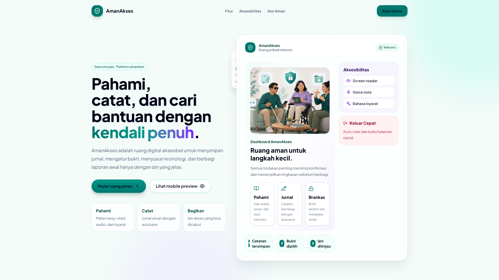
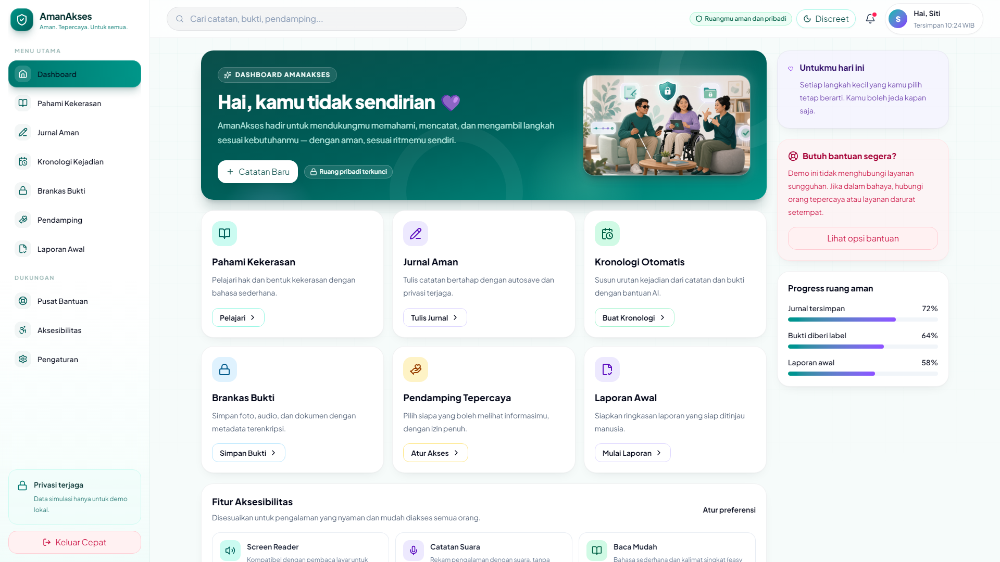
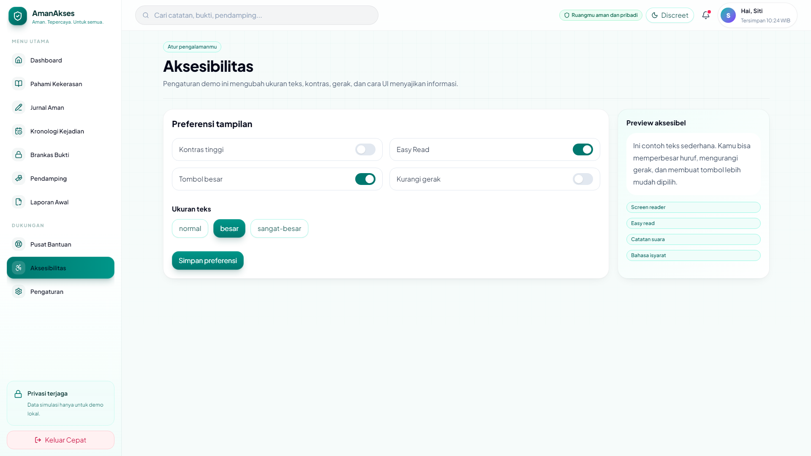
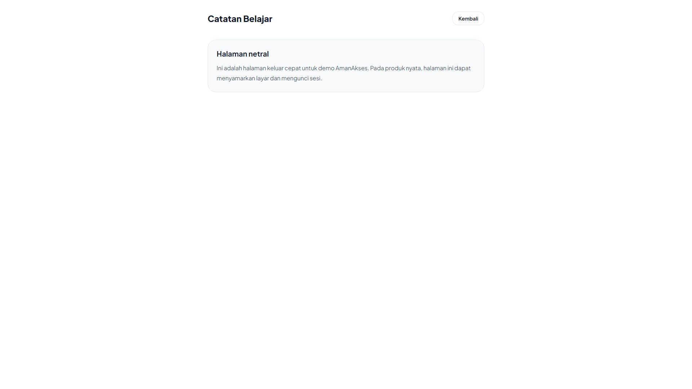
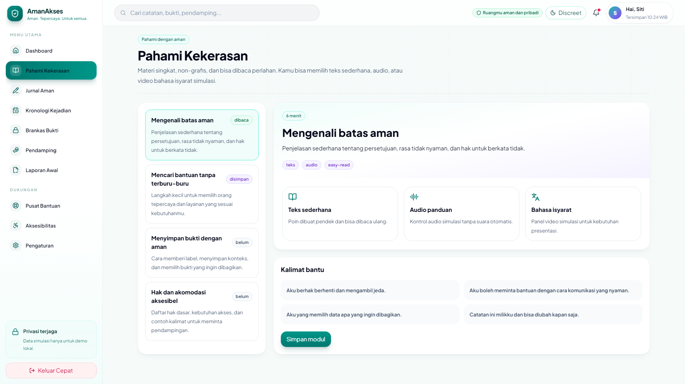
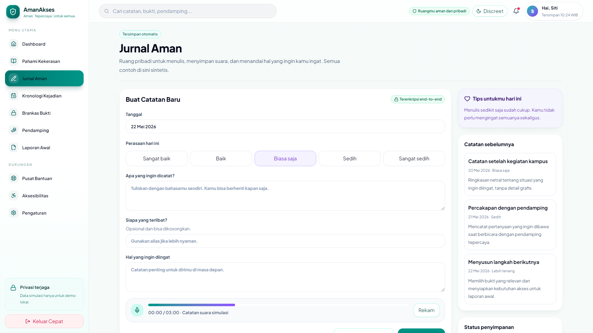
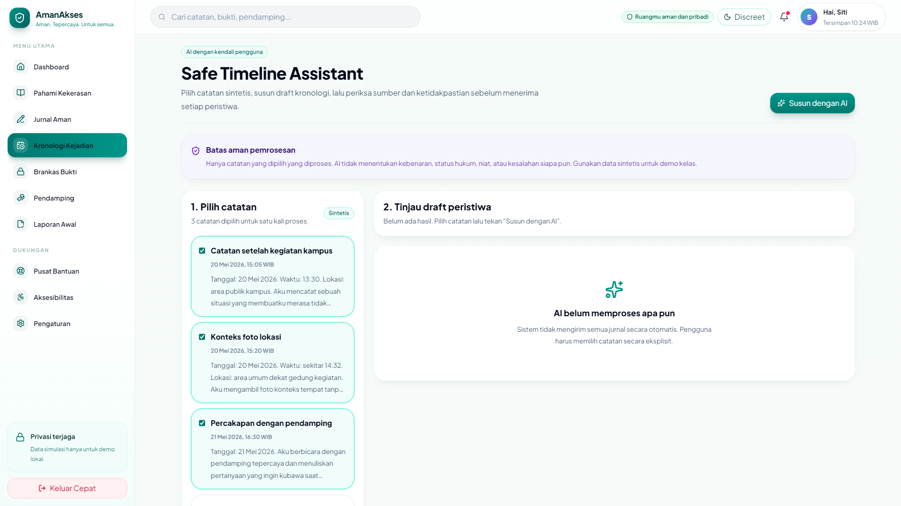
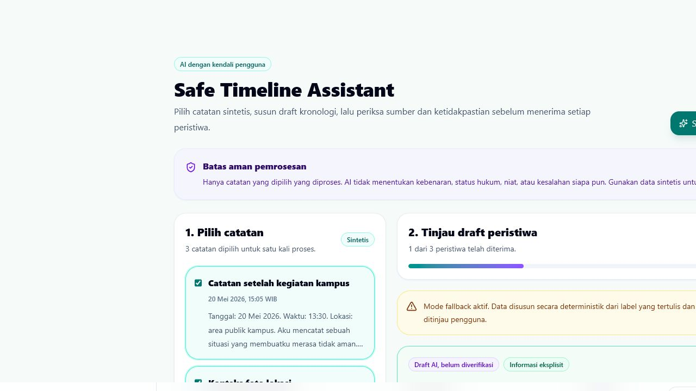
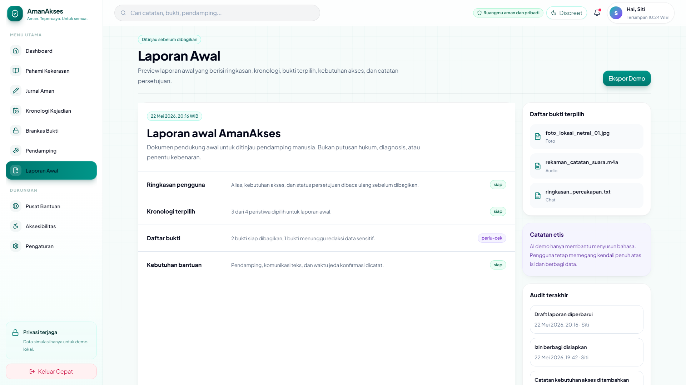

AmanAkses
AI FOR REAL IMPACT 2026
MASALAH NYATA
Pelaporan bukan tes ingatan.
Teknologi seharusnya membantu menata pengalaman, tanpa mengambil kendali dari penggunanya.

Hambatan bahasa, navigasi, komunikasi, dan beban kognitif tidak boleh membuat akses bantuan semakin berat.
01AmanAkses
/app/dashboard
SATU RUANG, BANYAK JALUR
Belajar, mencatat, menata, dan meninjau.



Mode discreet
Preferensi akses
Keluar cepat
Data sintetis
Pengguna memilih jalurnya sendiri dan dapat keluar menuju halaman netral kapan saja.
02Alur Aman
PAHAMI -> CATAT -> PILIH -> TINJAU
TIDAK LANGSUNG MEMAKSA LAPORAN
Memahami dulu. Mencatat bertahap.



1Pahami
2Catat
3Pilih
4Tinjau
Hanya catatan yang dipilih secara eksplisit yang dapat masuk ke tahap berikutnya.
03Safe Timeline Assistant
/api/timeline
AI DENGAN BATAS EKSPLISIT
AI bekerja di ruang yang dibatasi.

Structured output contract
sourceNoteIdswajib valid
date / time / locationnullable
uncertaintyexplicit | ambiguous | missing
requiresReviewtrue
Tidak menentukan kebenaran
Tidak membuat diagnosis
Tidak menyimpulkan niat
Informasi yang tidak tersedia tetap kosong atau ditandai tidak pasti, bukan ditebak.
04Human Review Gate
DRAFT AI, BELUM DIVERIFIKASI
KEPUTUSAN TETAP PADA PENGGUNA
Setiap peristiwa harus ditinjau manusia.

Buka sumber. Periksa. Putuskan.
01Edit isi dan ketidakpastian
02Terima ke laporan
03Tolak peristiwa
Fallback deterministik menjaga demo tetap berjalan saat Gemini atau jaringan tidak tersedia.
Tidak ada hasil yang otomatis masuk ke laporan.
05Batas Data
GEMINI_API_KEY: SERVER-SIDE
PRATINJAU, BUKAN KEPUTUSAN
Laporan awal untuk ditinjau manusia.
Data boundary
Browser catatan terpilih
↓
POST /api/timeline
↓
Serverless GEMINI_API_KEY
Kunci tidak masuk browser
Tidak ada data nyata

Dokumen ini bukan putusan hukum, diagnosis, atau penentu kebenaran.
06Validasi
SYNTHETIC FIXTURES
BUKTI TEKNIS YANG DAPAT DIAUDIT
Diuji dengan skenario sintetis.
10/10
Skenario utama lulus: field hilang, ambiguitas waktu, lokasi kosong, alias, dan catatan netral.
+1negative guard menolak sumber tidak valid
BUILDproduction build lulus
LINTpemeriksaan statis lulus
Validasi membuktikan kontrak data dan fallback, bukan ketepatan AI pada kasus nyata.
AmanAkses
PROTOTYPE · JUNI 2026
PRINSIP UTAMA
AI membantu menata.
Manusia tetap menentukan.
Langkah berikutnya: co-design, peer testing, audit aksesibilitas mendalam, dan evaluasi privasi sebelum pilot terbatas.
AmanAkses belum menggantikan pendamping profesional atau layanan resmi.